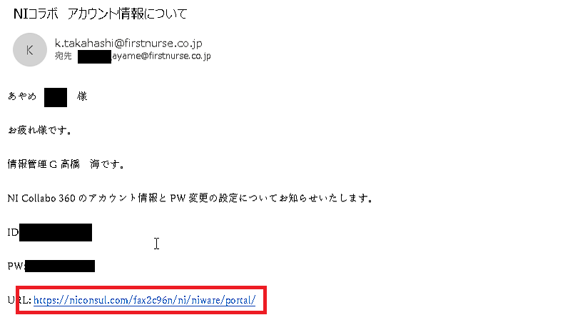
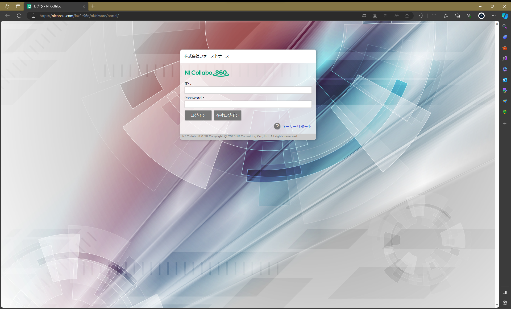
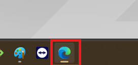
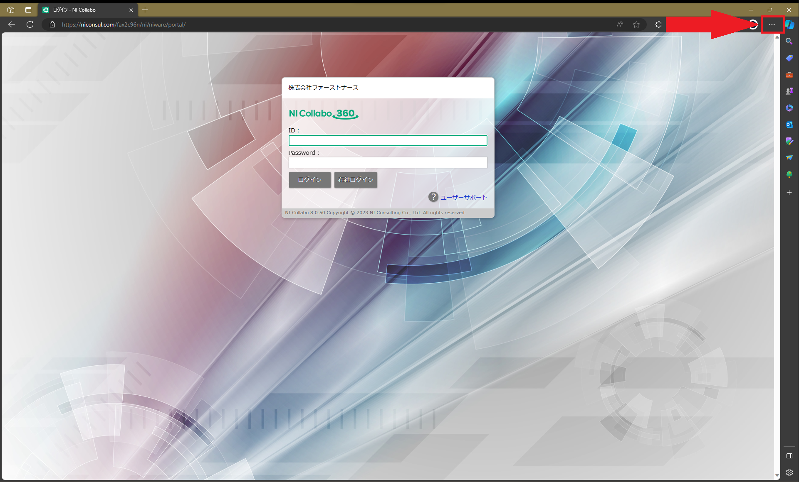
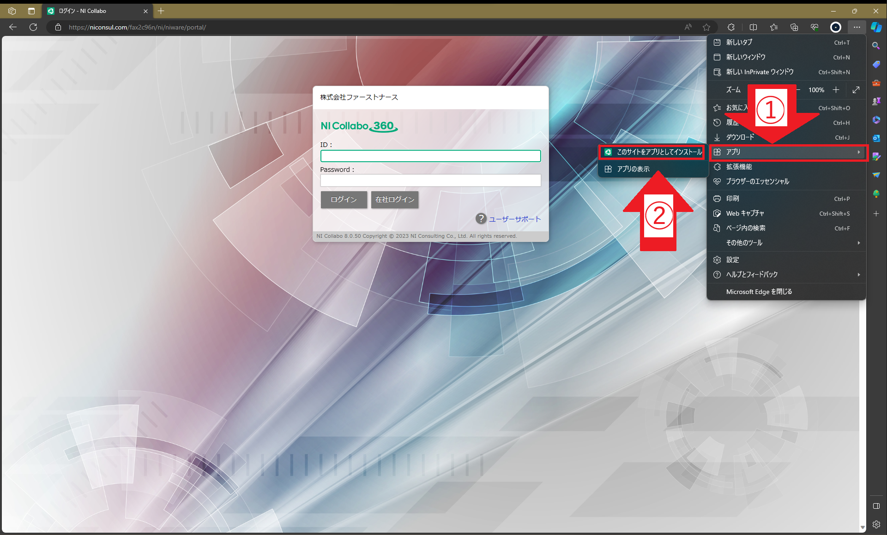
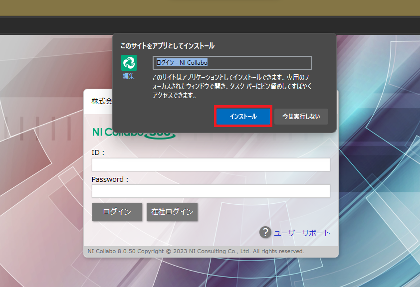
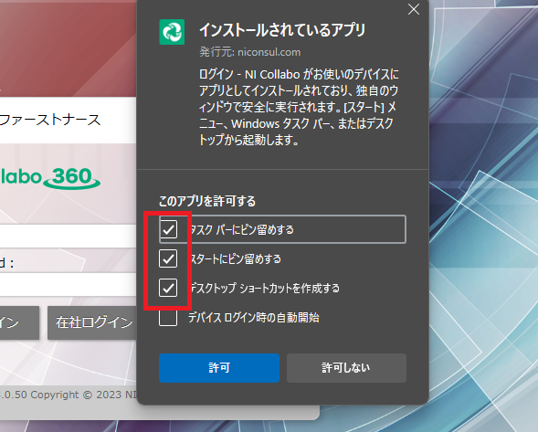
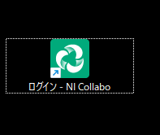
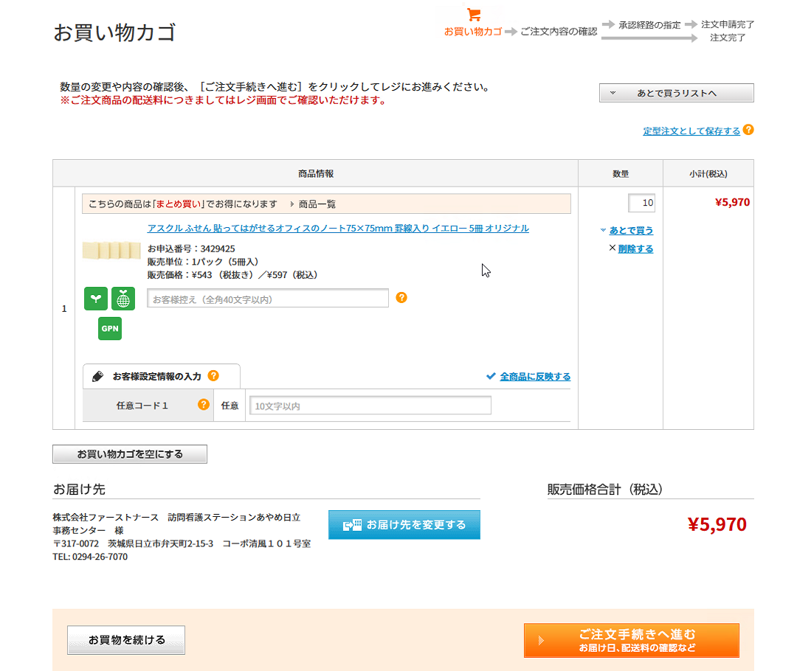
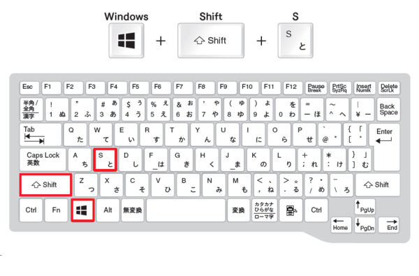

NIコラボ
目次
1.ショートカットの作成方法
NIコラボのサイトのショートカットの作成方法を説明します。
①熊谷事務から送付されたメールを開き、赤枠部のリンクをクリックしてください。
②ブラウザが起動し、ログイン画面が表示されることを確認してください。
※以降の説明は開いているブラウザがEdgeであることが前提となります。（基本的には何もしなくてもEdgeで開きます）
青いグルグルマークで開いていればEdgeです。
⑤矢印で示した赤枠部をクリックします。
⑥矢印で示した赤枠部を順番にクリックします。
クリック順序：アプリ→このサイトをアプリとしてインストール
⑦下記の画面が表示されます。インストールをクリックします。
⑧下記の画面が表示されます。赤枠部のチェックをつけ、許可ボタンを押してください。
(任意)タスクバーにピン留めをする。
(任意)スタートにピン留めをする。
(必須)デスクトップにショートカットを作成する。
⑨デスクトップ上にアイコンが作成されたことを確認してください。
2.画面のスクリーンショットの取り方
稟議申請で、アスクルの買い物カゴの画像(下画像)や、WEBページの画像をNIコラボに添付することがあると思いますので、スクリーンショットの取り方を説明します。
①撮りたい画面を表示して、［Windows］＋［Shift］＋［S］キーを押す。
［Windows］を押しながら、［Shift］＋［S］を押すとうまくいきます。
